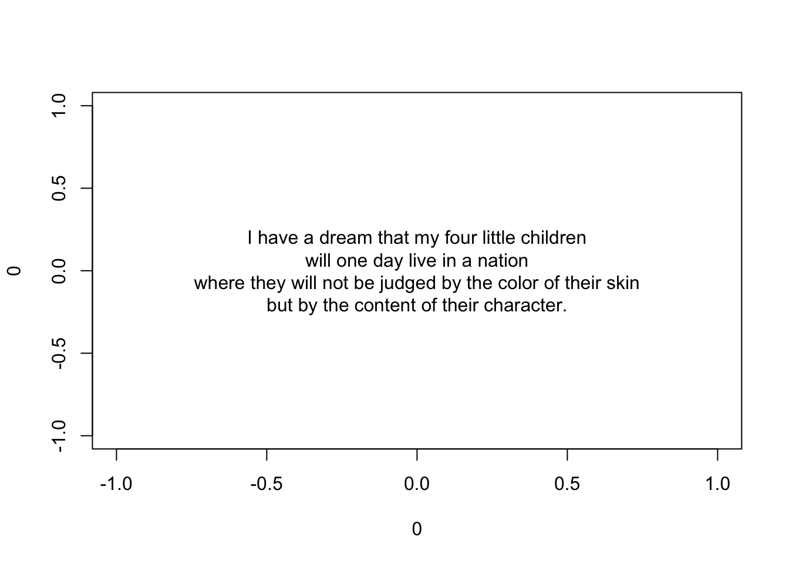
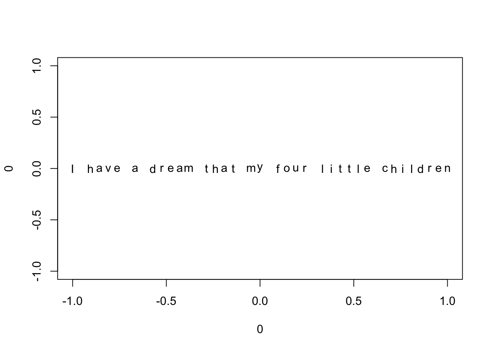
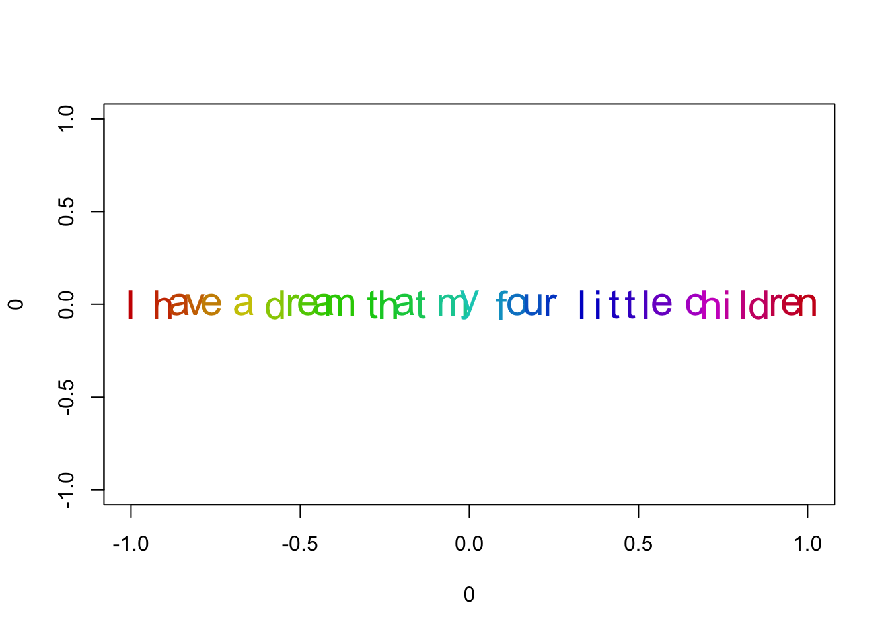
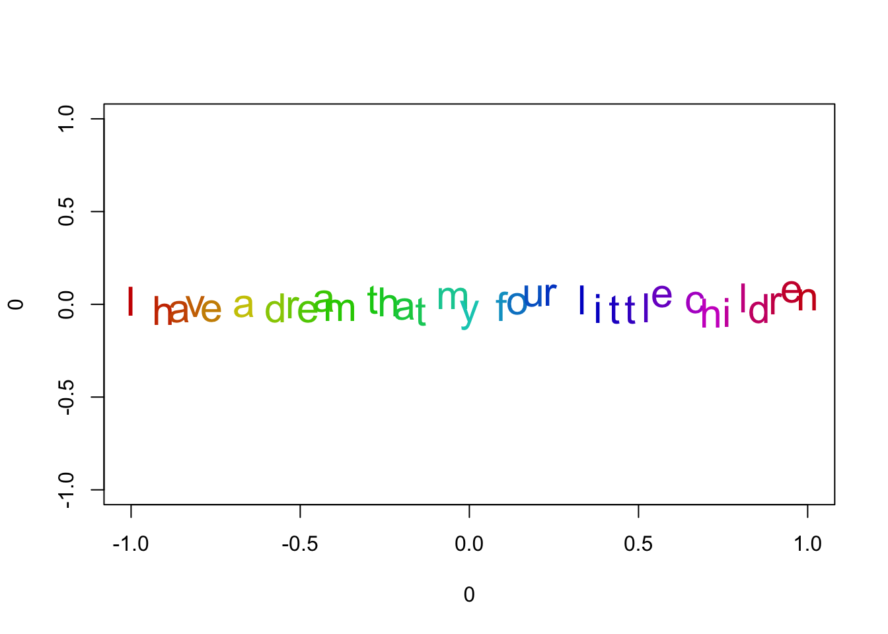
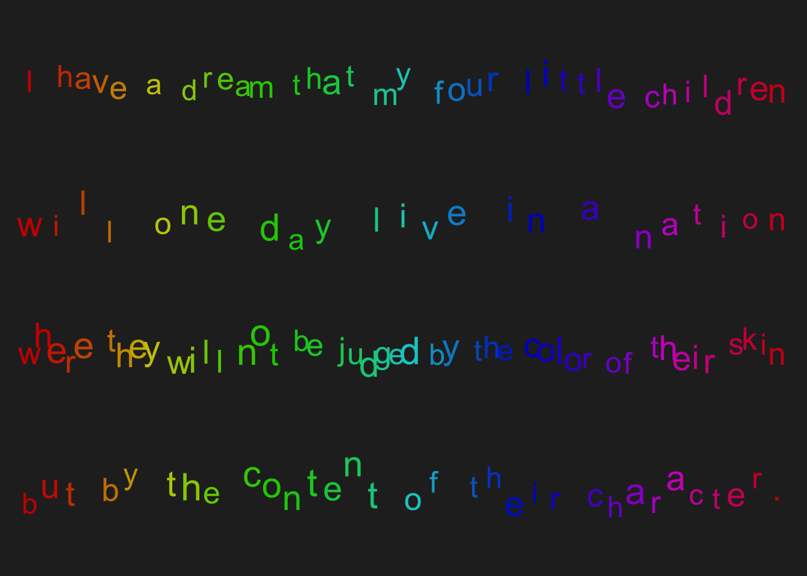

speech <- c(
"I have a dream that my four little children",
"will one day live in a nation",
"where they will not be judged by the color of their skin",
"but by the content of their character."
)16 Fun Plots (part 2)
In the preceding chapter we created a first entertaining plot. In this chapter we move on to our second fun graphic involving some strings.
16.1 Colored Jittery Text
For our second fun plot, let’s consider some text. For instance, part of the famous speech by Dr. King:
I have a dream that my four little children will one day live in a nation, where they will not be judged by the color of their skin but by the content of their character.
Let’s put the text in a character vector:
First we are going to plot the text as a single string, collapsing it with some new-line characters "\n":
plot(0, 0, type = 'n')
text(0, 0, paste(speech, collapse = '\n'))
Notice that we’re using basic coordinates with a center for the plot on (0,0). This helps us identify reference points both in the x-axis and the y-axis for future manipulation of the character strings.
In order to plot each character with a different size and with different coordinates, we need to split the strings into individual characters. To do this we use the almighty function strsplit(). For testing purposes, let’s take one sentence from MLK’s speech. Also, we’ll assign x-axis coordinates by dividing the range of the x-axis (from -1 to 1) in equal parts taking into account the number of characters in the input string:
# one sentence for testing purposes
str <- "I have a dream that my four little children"
# splitting str in individual characters
txt <- unlist(strsplit(str, split = ''))
# x-coordinates for each character
nchars <- length(txt)
xs <- seq(-1, 1, length.out = nchars)
plot(0, 0, type = 'n')
for (i in 1:nchars) {
text(xs[i], 0, labels = txt[i], cex = 1)
}
Now we can add color and modify the size of the characters. In this case we’ll use the rainbow() palette for colors, and the runif() function to generate uniform values to modify the sizes of the letters:
# character expansion and colors
rcex <- runif(nchars, 1.5, 2)
cols <- rainbow(nchars, v = 0.8)
plot(0, 0, type = 'n')
for (i in 1:nchars) {
text(xs[i], 0, labels = txt[i], cex = rcex, col = cols[i])
}
Finally, let’s add some jitter to the y-position. We do this by adding some noise following a normal distribution with mean zero and a small standard deviation via the rnorm() function:
# jitter for y-coordinates
ry <- rnorm(nchars, 0, 0.03)
plot(0, 0, type = 'n')
for (i in 1:nchars) {
text(xs[i], ry[i], labels = txt[i], cex = rcex, col = cols[i])
}
16.1.1 Assembling the plot
Once we have all the necessary elements, we can add the rest of the speech lines, remove the axes, and add a little bit of color to the background. Moreover, to manipulate each line of text (i.e. each element in the speech vector) we break them down with sapply(), so we can loop over each line inside the plot:
strs <- sapply(speech, function(x) strsplit(x, split=''))
ys <- seq(0.75, -0.75, length.out = length(strs))
# random seed
set.seed(34587)
# plot text
op <- par(mar = rep(0, 4), bg = 'gray15')
plot(0, 0, type = 'n', axes = FALSE)
for (elem in 1:length(strs)) {
s <- unlist(strs[elem])
ns <- length(s)
xs <- seq(-1, 1, length.out = ns)
rcex <- runif(ns, 1.5, 2)
cols <- rainbow(ns, v = 0.8)
ry <- rnorm(ns, 0, 0.03)
for (i in 1:ns) {
text(xs[i], ys[elem] + ry[i], labels = s[i],
cex = rcex[i], col = cols[i])
}
}
par(op)